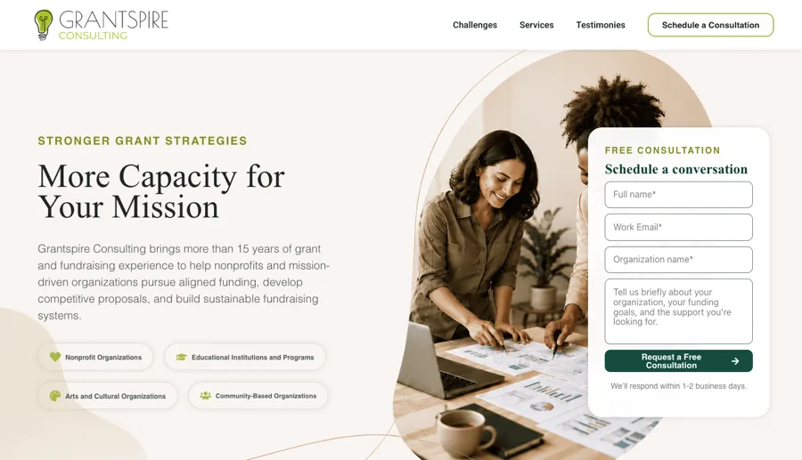
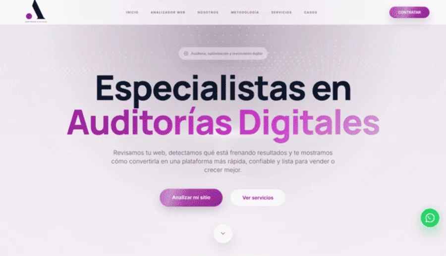
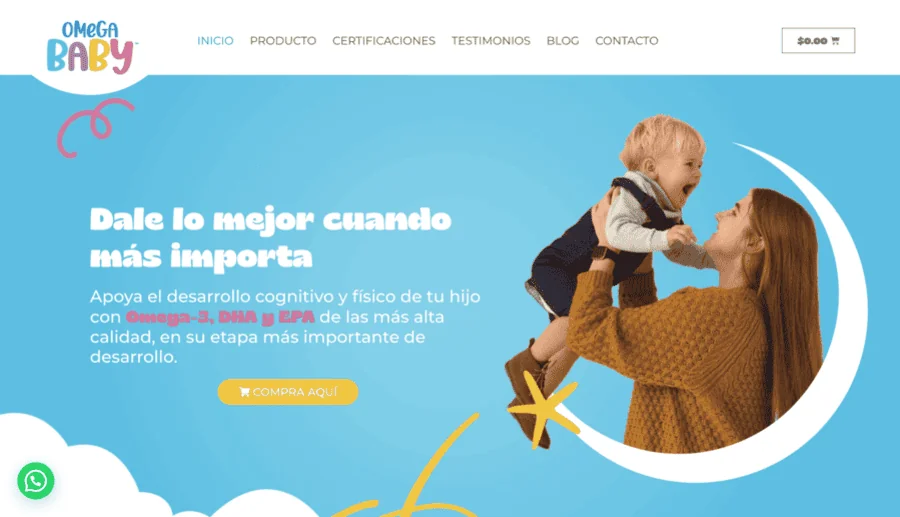
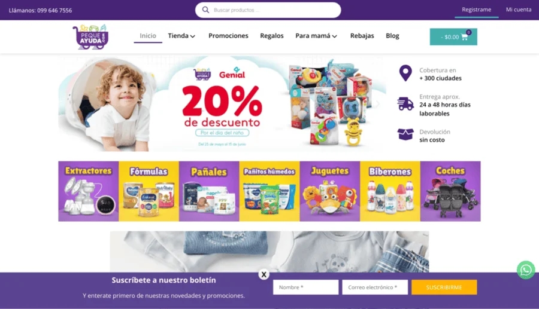
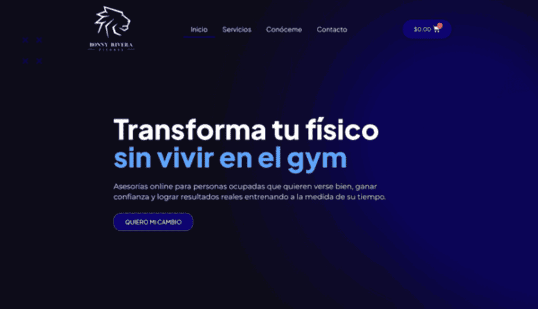
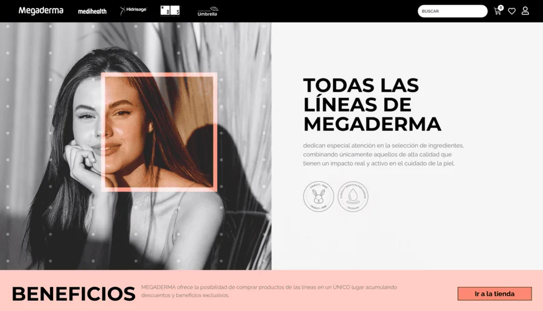
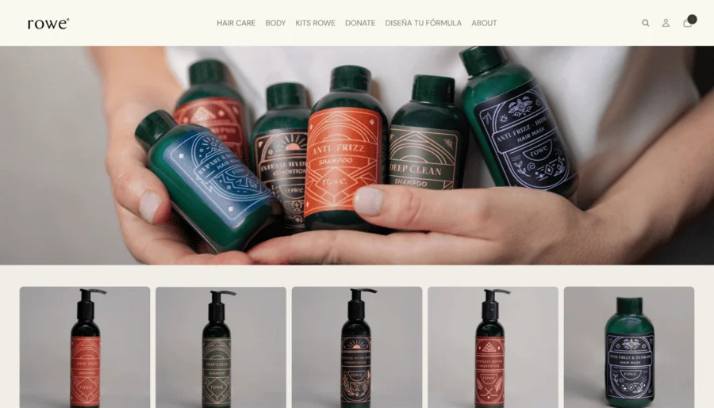
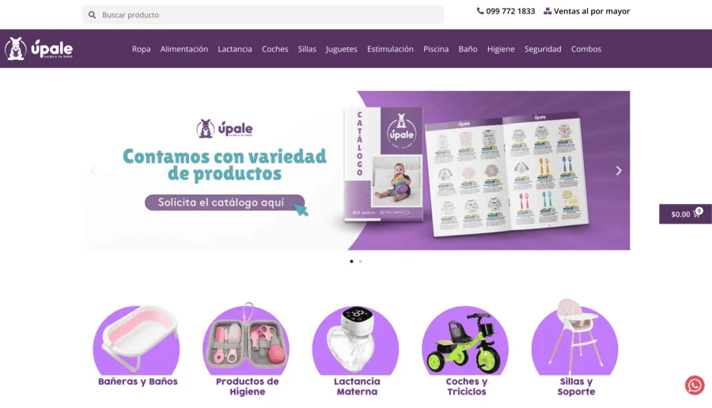
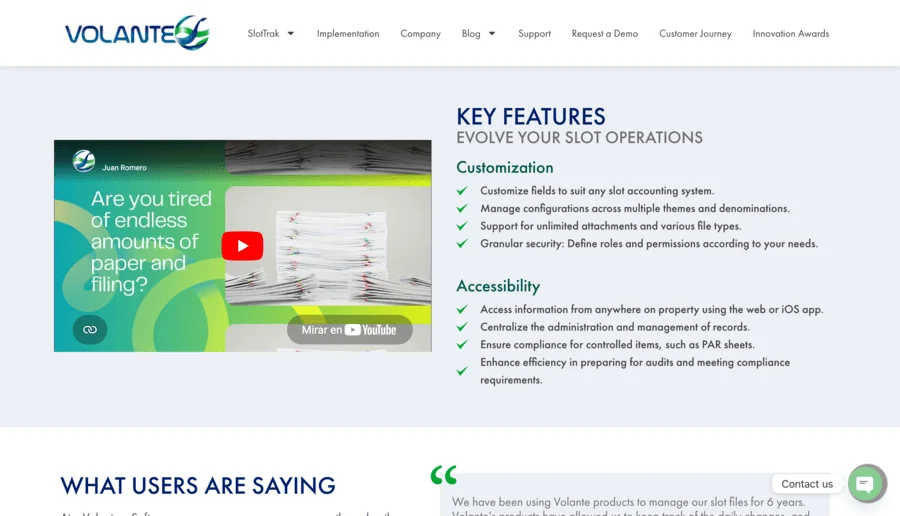
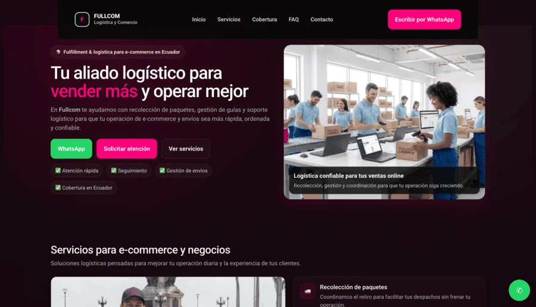

Drupal, WordPress, PHP & IA
Especialización en CMS empresariales, integraciones, APIs, rendimiento, SEO técnico y automatización con inteligencia artificial.
VER ESPECIALIDADES ↗Soy Jonathan Díaz, Web Advisor. Te ayudo a decidir qué página web, tienda en línea o flujo de IA necesita tu empresa, y lo construyo contigo con WordPress, Drupal y PHP.
CUÉNTAME TU PROYECTOAsesoría y desarrollo de páginas web para empresas, instituciones, agencias y equipos técnicos en Guatemala. Trabajo de forma remota y también colaboro con proyectos de Latinoamérica: desde decidir qué construir hasta el mantenimiento de la plataforma.
Especialización en CMS empresariales, integraciones, APIs, rendimiento, SEO técnico y automatización con inteligencia artificial.
VER ESPECIALIDADES ↗Desde sitios corporativos y portales institucionales hasta ecommerce, plugins, módulos, APIs y soluciones con IA.
EXPLORAR PROYECTOS →Antes de invertir, revisamos tu web, tus procesos y tus opciones para decidir qué construir, qué mejorar y dónde la IA sí aporta.
PEDIR ASESORÍA →Sitios corporativos y landing pages que explican tu negocio, se administran con facilidad y reciben solicitudes.
PÁGINAS WEB EN GUATEMALA →Sitios administrables, plugins e integraciones para publicar contenido y recibir solicitudes.
DESARROLLO WORDPRESS →Contenido estructurado, permisos, flujos editoriales y módulos para portales institucionales.
DESARROLLO DRUPAL →Actualizaciones, copias, revisión de formularios y mejoras para sostener tu WordPress o Drupal.
REVISAR MI PLATAFORMA →Tiendas Shopify y ecommerce preparadas para vender, crecer y facilitar la operación diaria.
DESARROLLO ECOMMERCE →Automatizaciones, asistentes e integraciones con inteligencia artificial aplicadas a sitios web, ecommerce y procesos de negocio.
INTEGRACIONES CON IA →Sistemas web a medida en PHP, plugins e integraciones enfocados en procesos y objetivos de negocio.
CONVERSAR SOBRE MI SISTEMA →Una selección de proyectos web, ecommerce y portales publicados en mi perfil profesional.










Soy Jonathan Díaz Policarpio, Web Advisor para empresas en Guatemala y Latinoamérica. Acompaño la decisión y la ejecución: qué web necesita tu empresa, cómo construirla y cómo integrar flujos de IA, con experiencia práctica en Drupal, WordPress y PHP.
He participado en sitios institucionales, plataformas corporativas y ecommerce para organizaciones de distintos sectores. Desarrollo plugins, módulos e integraciones con IA, colaboro con equipos técnicos y cuido rendimiento, SEO técnico y experiencia de usuario desde la implementación.
Conferencias, proyectos, viajes y momentos que también forman parte de mi forma de crear.
Trabajo con CMS y ecommerce consolidados, y aplico inteligencia artificial para acelerar el desarrollo y automatizar procesos. Mi objetivo es entregar soluciones web mantenibles, escalables y útiles para empresas, agencias y equipos técnicos.
CUÉNTAME TU PROYECTOSi buscas una página web, mantenimiento o asesoría para tu empresa en Guatemala, conversemos sobre tu plataforma, objetivos y alcance.
CUÉNTAME TU PROYECTOUn Web Advisor ayuda a una empresa a decidir qué web necesita antes de invertir: revisa objetivos, contenido, plataforma, integraciones y costos de operación, y luego acompaña o ejecuta el desarrollo. La diferencia con contratar solo desarrollo es que la decisión técnica se explica y se toma con el negocio.
Depende del tipo de sitio, la cantidad de plantillas, el estado del contenido, las integraciones y quién lo administrará. Una landing page cuesta menos que un sitio corporativo administrable, y una tienda en línea o un portal con permisos requiere más alcance. En páginas web en Guatemala explico qué define la inversión y cómo preparar una cotización comparable.
Un flujo de IA conecta una tarea concreta, como clasificar solicitudes, responder con información autorizada o preparar borradores, con los sistemas de la empresa y una revisión humana. Conviene cuando el proceso ya está claro, se repite con frecuencia y se puede medir. Lo explico en integraciones de IA.
Desarrollo landing pages, sitios corporativos, portales institucionales, ecommerce, plugins, módulos, integraciones con IA y sistemas web para empresas, marcas y equipos.
Sí. Uso Drupal para portales robustos, WordPress para sitios administrables y plugins, y Shopify para tiendas online orientadas a venta.
Sí. Creo funcionalidades específicas, conecto plataformas con servicios externos e integro APIs cuando las herramientas estándar no cubren la necesidad del proyecto.
Sí. Puedo integrarme a equipos de desarrollo, diseño o negocio, trabajar por entregables y documentar decisiones técnicas para facilitar el mantenimiento.
Cuéntame tu proyecto con el contexto, objetivos y alcance inicial. Revisamos prioridades, alcance y el siguiente paso más útil para tu plataforma web.